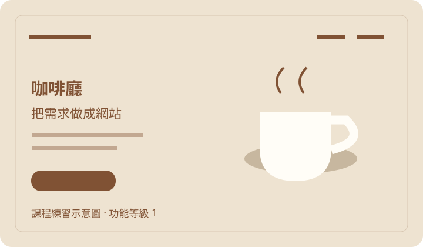
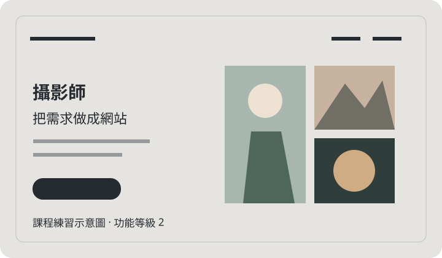
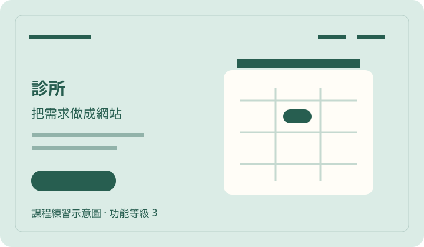
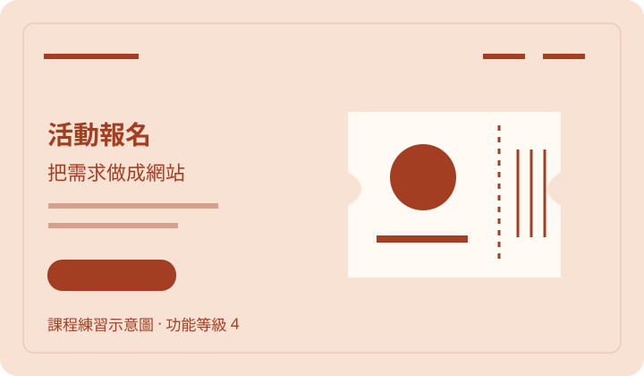
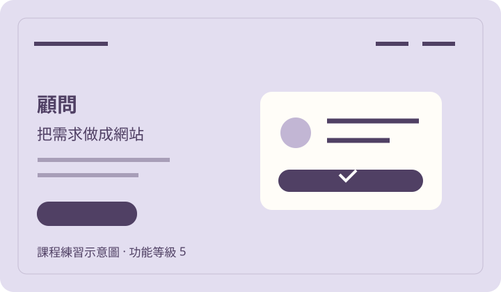

先備齊素材，再開始實作
跟著影片做
依影片順序取用完整提示詞、圖片與網頁。提示詞已含影片貼入的全文；AI 回覆可能不同，要對照影片練習時，請選下方指定的範例版本。
本區與下載套件可離線使用。按鈕若無法寫入剪貼簿，會顯示可手動複製的全文。圖片生成提示是另附的練習建議，原圖以下載檔為準。
-
素材 01 · 影片段落 003、019
操作順序與填表範例
從兩道提示詞到親手試算；所有輸入都在本頁。
展開全文
第十八講｜我的接案首頁 準備：先登入自己的 ChatGPT 帳號，確認可以開啟新對話。若出現登入或本人驗證畫面，先完成再開始。 1. 先複製「第一道：課本5.1原提示詞」，到已登入的 ChatGPT 開新對話，整段貼入後送出。等第一版 HTML 或 index.html 附件完成。 2. 回到本頁，複製「第二道：改成我的接案首頁」，切回同一個 ChatGPT 對話，整段貼入後送出。這道提示會沿用第一版，不需要另找既有 HTML。 3. 回覆完成後，按 HTML 程式碼區塊的複製鈕。回課程網站開「貼上預覽工具」，在 HTML 欄貼上，按「儲存並預覽」。下載為 index.html，雙擊打開。 4. 確認作品牆有五張練習作品、各標功能等級1到5。圖片由提示詞要求畫成內嵌SVG，不必先上傳照片。下面另有五張可下載示意圖及圖片提示詞可練習替換。 5. 在「找我做網站」填：業態＝顧問工作室；客群＝第一次創業的店主；核心行動＝預約付費諮詢；資料來源＝我提供服務內容與時段。勾「預約排程」「線上收款」，維護選每月一次。按「查看我的需求方案」。 6. 應看到功能等級5；頁面8000、功能36000、整合20000，一次性合計64000；維護2000/月另外列。往下看交付清單、驗收項目和維護規則。這些數字是教學示意，不是行情或正式報價。 7. 取消「線上收款」並重新試算，應變等級3、一次性24000。全部功能不選則等級1、一次性8000。故意空白一欄，確認不能產生方案。縮到手機寬，確認沒有左右捲動。 AI 的版面可能不同；驗收看功能、六個區塊與資料是否完整。若需要對照，下載「接案首頁：可直接打開的參考成品」。它是另外提供的參考版本，不能當成你自己的AI回覆。
檔案核對碼（SHA-256）
2cfc01e14a66ad0ebf90ae826d9a8c1ab73775a3a92c2ecd780b4a68329afedb -
素材 02 · 影片段落 004
第一道：課本5.1原提示詞
與已出版課本第十八講5.1逐字相同。先在新對話貼這一道。
展開全文
你是網頁設計老師與前端工程師。 幫我建一個「總複習」的單頁網站原型。 【網站目標】 全書技術地圖、接案報價、交付清單、驗收表與維護規則 【使用者情境】 使用者第一次進入網站時，需要在手機上快速判斷這個服務是否適合自己，並能完成主要行動：整理全書網站類型、功能等級、報價邊界與交付清單。 【必要區塊】 1. 網站類型總表：單頁、作品與部署、預約與排程、會員與課程、交易與平台 2. 需求訪談：業態、客群、核心行動、資料來源 3. 報價拆分：頁面數、功能數、整合項目、維護 4. 交付清單：原始檔、部署網址、帳號權限、文件 5. 驗收流程：手機版、表單、資料、付款、SEO 6. 維護規則：更新頻率、責任人、費用、回復流程 【資料欄位】 請在頁面中示範下列資料結構： 1. WebsiteType：名稱、功能等級、適合業態、風險 2. ScopeItem：項目、是否包含、驗收方式 3. QuoteLine：工作項目、估時、價格、備註 4. DeliveryAsset：檔案、帳號、網址、文件 5. AcceptanceCheck：檢查項目、結果、修正方式 6. MaintenanceRule：更新頻率、責任人、費用 【設計要求】 1. 用清楚的 HTML 結構與 CSS，建成一個可以直接打開的單一 index.html（CSS 寫在同一個檔案裡）。 2. 請使用 RWD，手機、平板、桌機都要可讀。 3. 請避免假評價、假資歷、假價格或過度承諾。 4. 表單與按鈕要有清楚的互動狀態，可以用靜態示意，不需要真的送出到伺服器。 5. 在頁尾標明這是教學示範原型，所有數字與案例皆為示意，不含真實營業資料。
檔案核對碼（SHA-256）
8c2e7f93d68f8e38277aed0d40195c58a75b24301b874dc52b9d7f793de820a3 -
素材 03 · 影片段落 008
第二道：改成我的接案首頁
第一版回覆完成後，貼到同一個對話。五張縮圖由內嵌SVG生成，無須上傳圖片。
展開全文
把剛才的總複習工作台，改成給業主看的「我的接案首頁」，上面加作品集。請沿用第一版的六個必要區塊與六個資料物件，不必逐字保留舊版長文或裝飾，再完整輸出可直接存成 index.html 的單一 HTML，CSS、JavaScript、作品示意圖都放在同一檔，放在一個 html 程式碼區塊，不省略任何程式碼。 【完整輸出與篇幅】 請先規劃全部內容，再輸出一個完整 html 程式碼區塊。這次務必精簡在 5,000 字元內：CSS 最多 800 字元，只用共用樣式；JavaScript 使用資料陣列、短變數和共用渲染函式，避免重複長 HTML；五張 SVG 用簡單線條，每張約 150 字元。所有說明都用短句，不重述題目，不加註解、前言或長段介紹。原先六區塊、六物件及以下所有功能必須保留；只縮短重複文案與裝飾。頁面一次完整輸出，以 </body></html> 結束，不要輸出到一半。 【上半部：看見我做過什麼】 用攝影師作品集的方式排版：米白底、深墨綠文字、大標題、清楚留白。主標「把你的專業，做成看得懂的網站。」、副標「我的接案首頁」、按鈕「看我的作品」「找我做網站」。不要虛構姓名、資歷、客戶或成果。 五張「課程練習作品」卡：咖啡廳／功能等級 1 單頁形象；攝影師／功能等級 2 作品與部署；診所／功能等級 3 預約與排程；活動報名／功能等級 4 會員與課程；顧問預約與付款／功能等級 5 交易與平台。每卡寫業主想解決的問題、功能與主要風險。這些是練習原型，不能說成真實接案成果。 作品縮圖請用內嵌 SVG 畫網站示意圖：咖啡廳有杯子與菜單、攝影師有照片格、診所有時段格、活動有票卡、顧問有預約與付款流程。SVG 加 title 和 role=img；縮圖旁寫「課程練習示意圖」。只用這五張內嵌圖，不引用外部圖片或自行編造圖檔路徑。課程網站另有可下載的同類 SVG 與圖片提示詞。 【下半部：找我做網站】 需求表單必填「業態」「客群」「核心行動」「資料來源」四個文字欄位（各最多80字），選項為「作品展示」「預約排程」「會員與報名」「線上收款」「後台管理（含權限、訂單或名單管理）」，維護選項為「暫不安排／每月一次」。預設都不勾選，維護預設每月一次。不收姓名、電話或信箱。 按「查看我的需求方案」後，在同頁即時顯示結果，不重新整理、不送出到伺服器，也不存入 localStorage。空欄或只有空白不能提交，要告訴使用者補哪一欄；修改欄位後標「需求已修改，請重新產生方案」，不要把上次結果當成最新結果。 判級採最高責任：收款或後台→5；會員與報名→4；預約排程→3；作品展示→2；全部不選→1。顯示判定理由及「同業態也會因功能不同而跨級；這是初步需求分級，正式範圍要再確認」。 【結果卡：六個區塊都要保留，但用業主看得懂的語言】 1 網站類型總表→上方五張作品卡與五級說明。 2 需求訪談→剛才的表單及結果摘要。 3 報價拆分→四張卡：頁面、功能、整合、維護。數字是教學示意：頁面8000；功能加總＝作品4000、預約12000、會員18000、收款24000、後台20000；整合加總＝預約4000、會員6000、收款16000、後台6000；每月維護選擇有則2000/月，沒有則0。一次性總額只加頁面＋功能＋整合，月費另外列，不混進一次性總額；顯示每項的估時、價格與備註（示意工時＝該項一次性金額÷2000）。寫清「包含」「不包含」「新增功能另行估價」；網域、主機及第三方費用不包含。這是需求試算，頁面沒有真的串接預約、會員、付款或後台。 4 交付清單→原始檔、GitHub倉庫、部署網址、業主帳號權限、操作文件，標「待雙方確認」，不是已經完成。 5 驗收流程→手機排版、表單必填、輸入顯示安全、資料與狀態、付款與退款、權限、SEO、鍵盤操作、圖片替代文字、回到上一版。依所選功能列出需測項目；一般項目狀態統一寫「正式交付前檢查」，並列具體檢查方式，表示還要實際驗證；未選付款標「本案不含」，選了標「正式串接後驗收」，不能假裝前端原型已通過真實付款。 6 維護規則→每月一次或未約定、接案方與業主分工、費用、錯誤回報方式與回到上一版的流程；回覆時限另議，不憑空承諾。 【六個資料物件】 JavaScript 內有 WebsiteType（名稱、功能等級、適合業態、風險）、ScopeItem（項目、是否包含、驗收方式）、QuoteLine（工作項目、估時、價格、備註）、DeliveryAsset（檔案、帳號、網址、文件）、AcceptanceCheck（檢查項目、結果、修正方式）、MaintenanceRule（更新頻率、責任人、費用）。用它們產生對應畫面，不要只在註解寫名稱。對業主畫面不用顯示程式名稱。 【輸出前程式自查】 讀取多個勾選框，必須使用 Array.from(document.querySelectorAll(...))，再做 map 或 reduce；querySelector 只回傳單一元素，不能展開成陣列。檢查每個函式的輸入型別與每個選取器。送出流程要能依序取得欄位、勾選值、計算並產生結果，不可只有畫面。用預約加收款試算：等級5、一次性64,000、每月2,000；取消收款再算：等級3、一次性24,000；五項皆不選為等級1、8,000。顯示金額使用 toLocaleString('en-US')，保留千分位。 【可用與可讀】 表單都有 label、明確焦點與鍵盤順序。CSS 必須明寫 input,select,textarea,button{font:inherit;font-size:18px}，包含 select 下拉選單與 option，避免瀏覽器預設的13px小字。顯示使用者文字用 textContent，不能把輸入拼進 innerHTML。按鈕可重複試算，結果有 aria-live 與標題焦點。桌機最小字16px。所有可見標籤、狀態徽章、欄位提示、維護說明、小字、導覽和英文眉題也必須至少16px，不可宣告14px或15px字級；不要只放大內文卻漏掉標籤。請逐條檢查所有font-size與媒體查詢，確定沒有小於16px的文字樣式。手機內文至少18px、說明與按鈕至少16px、區塊標題至少32px；390px與320px寬不橫向溢出，表單與報價卡改成單欄。頁尾標「教學示範原型，所有數字與案例皆為示意，不含真實營業資料；需求只在本頁試算，不會傳送。」檔案核對碼（SHA-256）
35b2886fa722b8ec487dc4330dbad477cd815b776abde80f6386e4d1703a3191 -
素材 04 · 影片段落 014
咖啡廳課程練習縮圖
可下載練習替換；影片首頁使用相同題材的內嵌SVG，不依賴這個外部檔。

示意圖，待換店家照片 展開圖片提示詞
畫一張16:9的咖啡廳網站縮圖，底色#eee3d1、主色#805234，留白清楚，左側主標與按鈕，右側以幾何圖形呈現服務情境，不用真人、不放品牌、不造假評價。圖說標「示意圖，待換店家照片」。用途是第十八講作品卡，功能等級1；不能讓縮圖看似真實客戶案例。
檔案核對碼（SHA-256）
eba8e953f2552dedf325a73427ecb4a9978f71faa5cb71cab4710e9bd6066c4f -
素材 05 · 影片段落 014
攝影師課程練習縮圖
可下載練習替換；影片首頁使用相同題材的內嵌SVG，不依賴這個外部檔。

示意圖，待換店家照片 展開圖片提示詞
畫一張16:9的攝影師網站縮圖，底色#e5e4e1、主色#252b31，留白清楚，左側主標與按鈕，右側以幾何圖形呈現服務情境，不用真人、不放品牌、不造假評價。圖說標「示意圖，待換店家照片」。用途是第十八講作品卡，功能等級2；不能讓縮圖看似真實客戶案例。
檔案核對碼（SHA-256）
ccad896523413600cddaca18c1a2c93eae5fa57f7544523e4429dae5cdb3c608 -
素材 06 · 影片段落 014
診所課程練習縮圖
可下載練習替換；影片首頁使用相同題材的內嵌SVG，不依賴這個外部檔。

示意圖，待換店家照片 展開圖片提示詞
畫一張16:9的診所網站縮圖，底色#dbece6、主色#275e50，留白清楚，左側主標與按鈕，右側以幾何圖形呈現服務情境，不用真人、不放品牌、不造假評價。圖說標「示意圖，待換店家照片」。用途是第十八講作品卡，功能等級3；不能讓縮圖看似真實客戶案例。
檔案核對碼（SHA-256）
2740a4da4a4f3a8b1c91e614539d10ffc3ce28fe060407893beadd3c0235172e -
素材 07 · 影片段落 014
活動報名課程練習縮圖
可下載練習替換；影片首頁使用相同題材的內嵌SVG，不依賴這個外部檔。

示意圖，待換店家照片 展開圖片提示詞
畫一張16:9的活動報名網站縮圖，底色#f7e2d3、主色#a33e22，留白清楚，左側主標與按鈕，右側以幾何圖形呈現服務情境，不用真人、不放品牌、不造假評價。圖說標「示意圖，待換店家照片」。用途是第十八講作品卡，功能等級4；不能讓縮圖看似真實客戶案例。
檔案核對碼（SHA-256）
d62792fa06f5cb430bd72610b3687cf4faba61bb64eccfd42b5762dbb55b3bfe -
素材 08 · 影片段落 014
顧問課程練習縮圖
可下載練習替換；影片首頁使用相同題材的內嵌SVG，不依賴這個外部檔。

示意圖，待換店家照片 展開圖片提示詞
畫一張16:9的顧問網站縮圖，底色#e3def0、主色#504064，留白清楚，左側主標與按鈕，右側以幾何圖形呈現服務情境，不用真人、不放品牌、不造假評價。圖說標「示意圖，待換店家照片」。用途是第十八講作品卡，功能等級5；不能讓縮圖看似真實客戶案例。
檔案核對碼（SHA-256）
a3b5df670fb3c9c81ba9f3bab967bcdc0c2c0027230148b755d72d2383854f91 -
素材 09 · 影片段落 013
接案首頁：可直接打開的參考成品
依這兩道提示的規格製作的參考成品。與你自己的AI回覆分開使用；單檔內含SVG、CSS、JS，可離線開啟。
展開全文
<!doctype html> <html lang="zh-Hant"> <head> <meta charset="utf-8"><meta name="viewport" content="width=device-width,initial-scale=1"> <title>我的接案首頁｜讓專業被看見</title> <meta name="description" content="五個課程練習作品，從單頁形象到交易平台。填寫需求，查看網站功能等級、報價拆分與交付方式。"> <style> :root{--paper:#f7f5ed;--ink:#193e35;--muted:#53675e;--line:#ced5c9;--lime:#d8ed96;--white:#fffef9}*{box-sizing:border-box}html{scroll-behavior:smooth;scroll-padding-top:30px}body{margin:0;background:var(--paper);color:var(--ink);font:18px/1.7 -apple-system,BlinkMacSystemFont,"PingFang TC","Microsoft JhengHei",sans-serif}a{color:inherit;text-decoration-thickness:1px;text-underline-offset:5px}button,input,textarea,select{font:inherit;color:inherit}button,a,input,select,textarea{touch-action:manipulation}a:focus-visible,button:focus-visible,input:focus-visible,select:focus-visible,textarea:focus-visible,[tabindex="-1"]:focus-visible{outline:3px solid #a14a25;outline-offset:5px}button{cursor:pointer}h1,h2,h3,p{margin-top:0}h1{font-size:clamp(42px,5.2vw,74px);font-weight:600;line-height:1.25;letter-spacing:-.04em;max-width:900px;margin-bottom:26px}h2{font-size:42px;line-height:1.35;letter-spacing:-.025em;margin-bottom:20px}h3{font-size:25px;line-height:1.45;margin-bottom:12px}.wrap{max-width:1260px;margin:auto;padding-inline:48px}.nav{display:flex;align-items:center;justify-content:space-between;gap:24px;min-height:100px;border-bottom:1px solid var(--line)}.brand{font-size:22px;font-weight:700;text-decoration:none;letter-spacing:.05em}.nav-links{display:flex;gap:28px}.nav-links a{font-size:16px;text-decoration:none}.eyebrow{font-size:16px;letter-spacing:.15em;font-weight:650;text-transform:uppercase;margin-bottom:25px}.hero{padding:70px 0 60px;display:grid;grid-template-columns:1fr 240px;gap:42px;align-items:end}.hero p:not(.eyebrow){max-width:700px;color:var(--muted);font-size:21px}.hero-seal{border-top:1px solid var(--ink);padding:18px 0;font-size:16px}.hero-seal strong{display:block;font-size:65px;line-height:1.2;font-weight:400;margin:8px 0}.actions{display:flex;flex-wrap:wrap;gap:14px;margin-top:28px}.button{display:inline-flex;align-items:center;justify-content:center;gap:24px;padding:15px 25px;border-radius:40px;border:1px solid var(--ink);background:var(--ink);color:var(--white);text-decoration:none;min-height:55px;font-size:18px}.button.secondary{background:transparent;color:var(--ink)}.section{padding:60px 0;border-top:1px solid var(--line)}.section-head{display:flex;justify-content:space-between;gap:30px;align-items:end;margin-bottom:35px}.section-head p{max-width:470px;color:var(--muted);margin-bottom:5px}.projects{display:grid;grid-template-columns:repeat(2,minmax(0,1fr));gap:38px 28px}.project:last-child{grid-column:1/-1;display:grid;grid-template-columns:1fr 1fr;gap:32px;align-items:center}.thumb svg{display:block;width:100%;height:auto;border-radius:16px}.project-meta{display:flex;align-items:center;justify-content:space-between;gap:12px;margin:18px 0 10px}.project-meta span,.caption,.tag{font-size:16px}.tag{background:var(--lime);padding:5px 12px;border-radius:99px;white-space:nowrap}.project p{color:var(--muted);margin:8px 0;font-size:18px}.project .risk{font-size:16px}.caption{color:var(--muted);margin-top:8px}.request-intro{max-width:730px}.request-intro p{color:var(--muted)}.form-shell{padding:38px;background:var(--white);border:1px solid var(--line);border-radius:20px}.form-grid{display:grid;grid-template-columns:1fr 1fr;gap:22px 28px}label{display:block;font-weight:600;margin-bottom:8px}input[type=text],select{width:100%;border:1px solid #a3b2a6;border-radius:8px;padding:13px 15px;background:var(--white)}fieldset{border:0;margin:26px 0;padding:0}legend{font-weight:600;margin-bottom:15px}.choices{display:grid;grid-template-columns:repeat(2,minmax(0,1fr));gap:13px}.choice{display:flex;align-items:flex-start;gap:11px;font-weight:400;padding:15px;background:var(--paper);border:1px solid var(--line);border-radius:9px;margin:0}input[type=checkbox]{width:21px;height:21px;margin-top:6px;accent-color:var(--ink);flex-shrink:0}.helper{font-size:16px;color:var(--muted);margin:14px 0 0}.feedback{color:#9c3d27;font-weight:600;min-height:30px;margin:15px 0}.result{margin-top:32px}.result-banner{padding:36px;background:var(--ink);color:var(--white);border-radius:18px;margin-bottom:28px}.result-banner .eyebrow{color:var(--lime);margin-bottom:12px}.result-banner h2{font-size:40px}.result-banner p{margin-bottom:8px}.result-note{font-size:16px;color:#e1e9dd}.result-summary{display:grid;grid-template-columns:1fr 1fr;gap:14px 24px;margin-bottom:25px}.result-summary p{margin:0;overflow-wrap:anywhere}.result-summary strong{display:block;font-size:16px;color:var(--muted)}.quote-grid{display:grid;grid-template-columns:repeat(4,minmax(0,1fr));gap:16px}.quote-card{padding:22px;border:1px solid var(--line);border-radius:14px;background:var(--white)}.quote-card h3{font-size:20px}.amount{font-size:30px;line-height:1.4;font-weight:600;white-space:nowrap}.quote-card p{font-size:16px;margin-bottom:6px}.totals{display:flex;align-items:center;flex-wrap:wrap;gap:16px 40px;padding:25px 0;font-size:22px}.totals strong{font-size:36px}.boundary{background:#ecefe2;padding:24px;border-radius:12px;font-size:18px}.boundary p{margin-bottom:10px}.boundary p:last-child{margin-bottom:0}.result-section{margin-top:45px}.deliveries,.checks{display:grid;grid-template-columns:repeat(2,minmax(0,1fr));gap:12px;list-style:none;padding:0}.deliveries li,.checks li{padding:18px 20px;background:var(--white);border:1px solid var(--line);border-radius:10px}.deliveries strong,.checks strong{display:block}.checks small,.deliveries small{font-size:16px;color:var(--muted);display:block;margin-top:6px}.maintenance{display:grid;grid-template-columns:repeat(3,minmax(0,1fr));gap:22px}.maintenance p{margin:0;padding:24px;background:#ecefe2;border-radius:12px}.maintenance strong{display:block;margin-bottom:8px}footer{padding:50px 0;color:var(--muted);font-size:16px;border-top:1px solid var(--line);margin-top:50px}footer p{max-width:940px}.footer-line{display:flex;justify-content:space-between;gap:24px;margin-top:28px}.skip{position:absolute;left:16px;top:-100px}.skip:focus{top:16px;background:white;padding:12px;z-index:20}[hidden]{display:none!important}@media(max-width:900px){.hero{grid-template-columns:1fr}.hero-seal{display:none}.quote-grid{grid-template-columns:1fr 1fr}.maintenance{grid-template-columns:1fr}.section-head{display:block}}@media(max-width:640px){body{font-size:18px}.wrap{padding-inline:22px}.nav{min-height:100px;align-items:flex-start;flex-direction:column;justify-content:center;gap:10px}.nav-links{gap:20px}.hero{padding:42px 0}.hero p:not(.eyebrow){font-size:18px}h1{font-size:43px}h2,.result-banner h2{font-size:32px}h3{font-size:25px}.section{padding:40px 0}.projects,.project:last-child,.form-grid,.choices,.quote-grid,.deliveries,.checks,.result-summary{grid-template-columns:1fr}.project:last-child{display:block}.form-shell{padding:22px 18px}.result-banner{padding:26px 20px}.amount{font-size:32px}.totals{display:block;font-size:20px}.totals span{display:block;margin-bottom:12px}.actions{flex-direction:column}.actions .button{width:100%}.project-meta{align-items:flex-start}.footer-line{display:block}.eyebrow{letter-spacing:.1em}input[type=text]{min-width:0}.button{font-size:18px}.result-summary p,.choice,.boundary{overflow-wrap:anywhere}}@media(prefers-reduced-motion:reduce){html{scroll-behavior:auto}} </style></head> <body><a class="skip" href="#main">跳到主要內容</a><div class="wrap"> <header class="nav"><a class="brand" href="#">我的接案首頁<span aria-hidden="true"> ↗</span></a><nav class="nav-links" aria-label="主要導覽"><a href="#works">練習作品</a><a href="#request">找我做網站</a><a href="#footer">示範說明</a></nav></header> <main id="main"><section class="hero"><div><p class="eyebrow">從需求，到一個看得見的作品</p><h1>把你的專業，<br>做成看得懂的網站。</h1><p>先看作品，再聊你的客人需要什麼。<br>從一頁介紹，到能預約、報名與交易的服務。</p><div class="actions"><a class="button" href="#works">看我的作品 <span aria-hidden="true">↘</span></a><a class="button secondary" href="#request">找我做網站 <span aria-hidden="true">↗</span></a></div></div><aside class="hero-seal">十八講，收成自己的入口<strong>01—05</strong>五個功能等級<br>五個課程練習作品</aside></section> <section class="section" id="works"><div class="section-head"><div><p class="eyebrow">作品，也是需求的起點</p><h2>這些網站，<br>各自解決一個問題。</h2></div><p>每張卡都從前面講次延伸。<br>功能等級看責任，頁面數只是其中一部分。</p></div><div class="projects" id="projects"></div></section> <section class="section" id="request"><div class="request-intro"><p class="eyebrow">把你的想法說清楚</p><h2>找我做網站</h2><p>你想幫誰解決什麼問題？填完後，立即看功能等級、費用拆分與交付方式。這裡是需求試算，資料只留在這次頁面操作中。</p></div> <form id="request-form" class="form-shell" novalidate><div class="form-grid"><div><label for="business">業態</label><input id="business" name="business" type="text" required maxlength="80" placeholder="例如：顧問工作室" autocomplete="off"></div><div><label for="audience">客群</label><input id="audience" name="audience" type="text" required maxlength="80" placeholder="例如：第一次創業的店主" autocomplete="off"></div><div><label for="action">核心行動</label><input id="action" name="action" type="text" required maxlength="80" placeholder="例如：預約付費諮詢" autocomplete="off"></div><div><label for="source">資料來源</label><input id="source" name="source" type="text" required maxlength="80" placeholder="例如：我提供服務內容與時段" autocomplete="off"></div></div> <fieldset><legend>網站需要哪些功能？</legend><div class="choices"><label class="choice"><input type="checkbox" name="features" value="portfolio">作品展示</label><label class="choice"><input type="checkbox" name="features" value="booking">預約排程</label><label class="choice"><input type="checkbox" name="features" value="member">會員與報名</label><label class="choice"><input type="checkbox" name="features" value="payment">線上收款</label><label class="choice"><input type="checkbox" name="features" value="admin">後台管理（含權限、訂單或名單管理）</label></div></fieldset> <label for="maintenance">上線後的維護</label><select id="maintenance" name="maintenance"><option value="monthly">每月一次</option><option value="none">暫不安排</option></select><p class="helper">不用填姓名、電話或信箱。按鈕只在本頁計算，不會傳送需求。</p><p id="form-feedback" class="feedback" role="status" aria-live="polite"></p><button class="button" type="submit">查看我的需求方案 <span aria-hidden="true">↗</span></button></form> <div id="result" class="result" hidden><header class="result-banner"><p class="eyebrow">你的網站需求方案</p><h2 id="result-title" tabindex="-1"></h2><p id="reason"></p><p class="result-note">同業態也會因功能不同而跨級；這是初步需求分級，正式範圍要再確認。</p></header><div class="result-summary" id="summary"></div><h3>報價拆分示意</h3><div class="quote-grid" id="quote"></div><div class="totals"><span>一次性合計 <strong id="total"></strong></span><span>維護另計 <strong id="monthly"></strong></span></div><div class="boundary"><p id="included"></p><p><strong>不包含：</strong>網域、主機與第三方服務費用。此頁沒有真的串接預約、會員、付款或後台。</p><p><strong>新增功能：</strong>依資料模型、流程與測試範圍另行估價。所有數字僅為教學示意。</p></div> <section class="result-section" id="delivery"><h2>你會拿到什麼</h2><ul class="deliveries" id="delivery-list"></ul></section><section class="result-section" id="acceptance"><h2>一起確認，才算交付</h2><p>下面是預先約定的驗收項目；勾選功能不代表功能已上線。</p><ul class="checks" id="check-list"></ul></section><section class="result-section" id="maintenance-rules"><h2>上線之後，誰來照顧</h2><div class="maintenance" id="maintenance-list"></div></section><div class="actions"><a class="button secondary" href="#request">調整我的需求 ↑</a></div></div></section></main> <footer id="footer"><p><strong>教學示範原型。</strong>所有數字與案例皆為示意，不含真實營業資料；需求只在本頁試算，不會傳送。五張作品為課程練習示意圖，並非真實客戶案例。</p><div class="footer-line"><span>我的接案首頁 · 第十八講總複習</span><a href="#works">回到練習作品 ↑</a></div></footer></div> <script> const WebsiteType=[ {name:'咖啡廳',level:1,type:'單頁形象',audience:'咖啡廳',question:'讓客人先知道，這裡適不適合待一下午。',feature:'介紹、信任、聯絡與行動按鈕',risk:'文案真實、手機版可讀',image:'cafe'}, {name:'攝影師',level:2,type:'作品與部署',audience:'影像工作者',question:'先看作品風格，再決定要不要聊聊。',feature:'作品分類、RWD、SEO與部署',risk:'圖片路徑、部署後是否正常',image:'photo'}, {name:'診所',level:3,type:'預約與排程',audience:'門診服務',question:'把可選時段說清楚，減少來回確認。',feature:'時段、名額、取消與提醒',risk:'超收、隱私與狀態一致',image:'clinic'}, {name:'活動報名',level:4,type:'會員與課程',audience:'課程與活動',question:'報名與候補，各自有清楚的下一步。',feature:'會員、報名、候補與通知',risk:'候補順序、通知是否送到',image:'event'}, {name:'顧問預約與付款',level:5,type:'交易與平台',audience:'專業顧問',question:'預約之外，把付款與交付責任說清楚。',feature:'訂單、付款確認、權限與後台',risk:'金流、資料一致與權限',image:'consultant'}]; const illustrations={"cafe": "<svg xmlns=\"http://www.w3.org/2000/svg\" viewBox=\"0 0 720 420\" role=\"img\" aria-labelledby=\"t\"><title id=\"t\">咖啡廳網站課程練習示意圖</title><rect width=\"720\" height=\"420\" rx=\"20\" fill=\"#eee3d1\"/><rect x=\"26\" y=\"26\" width=\"668\" height=\"368\" rx=\"12\" fill=\"#eee3d1\" stroke=\"#805234\" stroke-opacity=\".2\"/><path d=\"M49 63h106m385 0h47m20 0h47\" stroke=\"#805234\" stroke-width=\"6\"/><text x=\"53\" y=\"161\" font-family=\"sans-serif\" font-size=\"29\" font-weight=\"700\" fill=\"#805234\">咖啡廳</text><text x=\"53\" y=\"201\" font-family=\"sans-serif\" font-size=\"22\" fill=\"#805234\">把需求做成網站</text><path d=\"M54 230h190m-190 22h145\" stroke=\"#805234\" stroke-opacity=\".4\" stroke-width=\"6\"/><rect x=\"53\" y=\"290\" width=\"144\" height=\"35\" rx=\"17\" fill=\"#805234\"/><ellipse cx=\"512\" cy=\"270\" rx=\"96\" ry=\"25\" fill=\"#c7b79f\"/><path d=\"M442 190h122v63q0 55-61 55t-61-55z\" fill=\"#fffdf7\"/><path d=\"M564 204h25q36 35-25 51\" fill=\"none\" stroke=\"#fffdf7\" stroke-width=\"15\"/><path d=\"M478 158q-16-22 5-43m34 43q-16-22 5-43\" fill=\"none\" stroke=\"#805234\" stroke-width=\"4\"/><text x=\"53\" y=\"369\" font-family=\"sans-serif\" font-size=\"17\" fill=\"#805234\">課程練習示意圖 · 功能等級 1</text></svg>", "photo": "<svg xmlns=\"http://www.w3.org/2000/svg\" viewBox=\"0 0 720 420\" role=\"img\" aria-labelledby=\"t\"><title id=\"t\">攝影師網站課程練習示意圖</title><rect width=\"720\" height=\"420\" rx=\"20\" fill=\"#e5e4e1\"/><rect x=\"26\" y=\"26\" width=\"668\" height=\"368\" rx=\"12\" fill=\"#e5e4e1\" stroke=\"#252b31\" stroke-opacity=\".2\"/><path d=\"M49 63h106m385 0h47m20 0h47\" stroke=\"#252b31\" stroke-width=\"6\"/><text x=\"53\" y=\"161\" font-family=\"sans-serif\" font-size=\"29\" font-weight=\"700\" fill=\"#252b31\">攝影師</text><text x=\"53\" y=\"201\" font-family=\"sans-serif\" font-size=\"22\" fill=\"#252b31\">把需求做成網站</text><path d=\"M54 230h190m-190 22h145\" stroke=\"#252b31\" stroke-opacity=\".4\" stroke-width=\"6\"/><rect x=\"53\" y=\"290\" width=\"144\" height=\"35\" rx=\"17\" fill=\"#252b31\"/><rect x=\"366\" y=\"107\" width=\"132\" height=\"224\" fill=\"#a7b6ae\"/><circle cx=\"432\" cy=\"164\" r=\"28\" fill=\"#ede2d1\"/><path d=\"M396 331l13-117h49l22 117\" fill=\"#4f665c\"/><rect x=\"512\" y=\"107\" width=\"131\" height=\"104\" fill=\"#c6b29e\"/><path d=\"M512 211l50-75 32 40 29-45 20 80\" fill=\"#716e66\"/><rect x=\"512\" y=\"225\" width=\"131\" height=\"106\" fill=\"#2f3e3a\"/><circle cx=\"577\" cy=\"278\" r=\"34\" fill=\"#d0ac83\"/><text x=\"53\" y=\"369\" font-family=\"sans-serif\" font-size=\"17\" fill=\"#252b31\">課程練習示意圖 · 功能等級 2</text></svg>", "clinic": "<svg xmlns=\"http://www.w3.org/2000/svg\" viewBox=\"0 0 720 420\" role=\"img\" aria-labelledby=\"t\"><title id=\"t\">診所網站課程練習示意圖</title><rect width=\"720\" height=\"420\" rx=\"20\" fill=\"#dbece6\"/><rect x=\"26\" y=\"26\" width=\"668\" height=\"368\" rx=\"12\" fill=\"#dbece6\" stroke=\"#275e50\" stroke-opacity=\".2\"/><path d=\"M49 63h106m385 0h47m20 0h47\" stroke=\"#275e50\" stroke-width=\"6\"/><text x=\"53\" y=\"161\" font-family=\"sans-serif\" font-size=\"29\" font-weight=\"700\" fill=\"#275e50\">診所</text><text x=\"53\" y=\"201\" font-family=\"sans-serif\" font-size=\"22\" fill=\"#275e50\">把需求做成網站</text><path d=\"M54 230h190m-190 22h145\" stroke=\"#275e50\" stroke-opacity=\".4\" stroke-width=\"6\"/><rect x=\"53\" y=\"290\" width=\"144\" height=\"35\" rx=\"17\" fill=\"#275e50\"/><rect x=\"380\" y=\"119\" width=\"254\" height=\"212\" rx=\"14\" fill=\"#fffdf7\"/><path d=\"M407 171h199M407 225h199M407 279h199M468 150v157M544 150v157\" stroke=\"#c5d9d0\" stroke-width=\"3\"/><rect x=\"481\" y=\"186\" width=\"48\" height=\"24\" rx=\"12\" fill=\"#275e50\"/><path d=\"M403 108h208\" stroke=\"#275e50\" stroke-width=\"14\"/><text x=\"53\" y=\"369\" font-family=\"sans-serif\" font-size=\"17\" fill=\"#275e50\">課程練習示意圖 · 功能等級 3</text></svg>", "event": "<svg xmlns=\"http://www.w3.org/2000/svg\" viewBox=\"0 0 720 420\" role=\"img\" aria-labelledby=\"t\"><title id=\"t\">活動報名網站課程練習示意圖</title><rect width=\"720\" height=\"420\" rx=\"20\" fill=\"#f7e2d3\"/><rect x=\"26\" y=\"26\" width=\"668\" height=\"368\" rx=\"12\" fill=\"#f7e2d3\" stroke=\"#a33e22\" stroke-opacity=\".2\"/><path d=\"M49 63h106m385 0h47m20 0h47\" stroke=\"#a33e22\" stroke-width=\"6\"/><text x=\"53\" y=\"161\" font-family=\"sans-serif\" font-size=\"29\" font-weight=\"700\" fill=\"#a33e22\">活動報名</text><text x=\"53\" y=\"201\" font-family=\"sans-serif\" font-size=\"22\" fill=\"#a33e22\">把需求做成網站</text><path d=\"M54 230h190m-190 22h145\" stroke=\"#a33e22\" stroke-opacity=\".4\" stroke-width=\"6\"/><rect x=\"53\" y=\"290\" width=\"144\" height=\"35\" rx=\"17\" fill=\"#a33e22\"/><path d=\"M389 125h238v67q-30 19 0 38v80H389v-80q30-19 0-38z\" fill=\"#fffaf4\"/><path d=\"M558 140v155\" stroke=\"#a33e22\" stroke-width=\"3\" stroke-dasharray=\"6 7\"/><circle cx=\"473\" cy=\"198\" r=\"37\" fill=\"#a33e22\"/><path d=\"M421 267h102\" stroke=\"#a33e22\" stroke-width=\"8\"/><path d=\"M579 167v98m15-98v98m15-98v98\" stroke=\"#a33e22\" stroke-width=\"3\"/><text x=\"53\" y=\"369\" font-family=\"sans-serif\" font-size=\"17\" fill=\"#a33e22\">課程練習示意圖 · 功能等級 4</text></svg>", "consultant": "<svg xmlns=\"http://www.w3.org/2000/svg\" viewBox=\"0 0 720 420\" role=\"img\" aria-labelledby=\"t\"><title id=\"t\">顧問網站課程練習示意圖</title><rect width=\"720\" height=\"420\" rx=\"20\" fill=\"#e3def0\"/><rect x=\"26\" y=\"26\" width=\"668\" height=\"368\" rx=\"12\" fill=\"#e3def0\" stroke=\"#504064\" stroke-opacity=\".2\"/><path d=\"M49 63h106m385 0h47m20 0h47\" stroke=\"#504064\" stroke-width=\"6\"/><text x=\"53\" y=\"161\" font-family=\"sans-serif\" font-size=\"29\" font-weight=\"700\" fill=\"#504064\">顧問</text><text x=\"53\" y=\"201\" font-family=\"sans-serif\" font-size=\"22\" fill=\"#504064\">把需求做成網站</text><path d=\"M54 230h190m-190 22h145\" stroke=\"#504064\" stroke-opacity=\".4\" stroke-width=\"6\"/><rect x=\"53\" y=\"290\" width=\"144\" height=\"35\" rx=\"17\" fill=\"#504064\"/><rect x=\"374\" y=\"132\" width=\"261\" height=\"170\" rx=\"17\" fill=\"#fffdf8\"/><circle cx=\"425\" cy=\"191\" r=\"22\" fill=\"#c2b6d4\"/><path d=\"M470 174h132m-132 28h90\" stroke=\"#504064\" stroke-width=\"7\"/><rect x=\"400\" y=\"244\" width=\"208\" height=\"32\" rx=\"16\" fill=\"#504064\"/><path d=\"M488 251l9 9 15-15\" fill=\"none\" stroke=\"white\" stroke-width=\"4\"/><text x=\"53\" y=\"369\" font-family=\"sans-serif\" font-size=\"17\" fill=\"#504064\">課程練習示意圖 · 功能等級 5</text></svg>"}; const rates={portfolio:{label:'作品展示',level:2,feature:4000,integration:0},booking:{label:'預約排程',level:3,feature:12000,integration:4000},member:{label:'會員與報名',level:4,feature:18000,integration:6000},payment:{label:'線上收款',level:5,feature:24000,integration:16000},admin:{label:'後台管理',level:5,feature:20000,integration:6000}}; const money=n=>'NT$'+n.toLocaleString('en-US'); const el=(tag,text,cls)=>{const n=document.createElement(tag);if(text!==undefined)n.textContent=text;if(cls)n.className=cls;return n;}; const projects=document.querySelector('#projects'); WebsiteType.forEach(w=>{const card=el('article',undefined,'project');const thumb=el('div',undefined,'thumb');thumb.innerHTML=illustrations[w.image];card.append(thumb);const detail=el('div');const meta=el('div',undefined,'project-meta');meta.append(el('span','課程練習作品'),el('span','功能等級 '+w.level,'tag'));detail.append(meta,el('h3',w.name),el('p',w.question),el('p',w.type+' · '+w.feature),el('p','主要風險：'+w.risk,'risk'));card.append(detail);projects.append(card);}); const form=document.querySelector('#request-form');const feedback=document.querySelector('#form-feedback');const result=document.querySelector('#result'); form.addEventListener('input',()=>{if(!result.hidden){feedback.textContent='需求已修改，請重新產生方案。';result.hidden=true;}}); form.addEventListener('submit',event=>{ event.preventDefault(); const values={}; const labels={business:'業態',audience:'客群',action:'核心行動',source:'資料來源'}; for(const [key,label] of Object.entries(labels)){const input=form.elements[key];values[key]=input.value.trim();input.removeAttribute('aria-invalid');if(!values[key]){result.hidden=true;feedback.textContent='請填寫「'+label+'」，不能只有空白。';input.setAttribute('aria-invalid','true');input.focus();return;}} const chosen=[...form.querySelectorAll('[name=features]:checked')].map(x=>x.value);const level=Math.max(1,...chosen.map(k=>rates[k].level));const monthly=form.elements.maintenance.value==='monthly'?2000:0; const ScopeItem=Object.entries(rates).map(([key,r])=>({item:r.label,included:chosen.includes(key),acceptance:'依約定功能測試主要流程與錯誤狀態'})); const feature=chosen.reduce((n,k)=>n+rates[k].feature,0),integration=chosen.reduce((n,k)=>n+rates[k].integration,0); const QuoteLine=[{item:'頁面',hours:4,price:8000,note:'首頁、手機版與一次部署',unit:'一次性'},{item:'功能',hours:feature/2000,price:feature,note:chosen.length?chosen.map(k=>rates[k].label).join('、'):'基本介紹與行動按鈕',unit:'一次性'},{item:'整合',hours:integration/2000,price:integration,note:'第三方串接工作；外部服務費另計',unit:'一次性'},{item:'維護',hours:monthly/2000,price:monthly,note:monthly?'每月一次內容與狀態檢查':'尚未約定維護',unit:'每月'}]; const DeliveryAsset=[{file:'HTML/CSS/JS 原始檔',account:'GitHub 倉庫與業主帳號',url:'部署網址與網域設定紀錄',document:'操作文件與回復步驟'}]; const AcceptanceCheck=[{item:'手機版',result:'待驗收',fix:'檢查320px、390px及桌機排版'},{item:'表單與輸入安全',result:'待驗收',fix:'必填與空白、文字安全顯示、送出確認'},{item:'資料與狀態',result:'待驗收',fix:'依範圍確認預約、報名、取消等狀態'},{item:'付款與退款',result:chosen.includes('payment')?'正式串接後驗收':'本案不含',fix:chosen.includes('payment')?'驗證付款通知、重送與退款狀態':'未列入本次需求'},{item:'權限',result:chosen.includes('admin')||chosen.includes('member')?'正式串接後驗收':'本案不含',fix:'不同角色只能操作被允許的資料'},{item:'SEO',result:'待驗收',fix:'標題、描述與網址可追蹤'},{item:'無障礙',result:'待驗收',fix:'鍵盤、表單標籤、替代文字與對比'},{item:'回到上一版',result:'待驗收',fix:'保存GitHub版本與部署回復紀錄'}]; const MaintenanceRule={frequency:monthly?'每月一次':'尚未約定',owner:'接案方檢查與修正；業主提供正確內容並確認',fee:monthly,recovery:'記錄網址、時間、操作與截圖；確認問題後回到上一個通過驗收的版本。回覆時限另議。'}; document.querySelector('#result-title').textContent='功能等級 '+level+'｜'+WebsiteType[level-1].type; document.querySelector('#reason').textContent='判定依據：'+(chosen.length?chosen.filter(k=>rates[k].level===level).map(k=>rates[k].label).join('、')+'帶來較高的資料、狀態或權限責任。':'目前只需要介紹、信任與聯絡入口。'); const summary=document.querySelector('#summary');summary.replaceChildren();for(const [key,label] of Object.entries(labels)){const p=el('p');p.append(el('strong',label),el('span',values[key]));summary.append(p);} const quote=document.querySelector('#quote');quote.replaceChildren();QuoteLine.forEach(q=>{const c=el('article',undefined,'quote-card');c.append(el('h3',q.item),el('div',money(q.price)+(q.unit==='每月'?'/月':''),'amount'),el('p','示意工時 '+q.hours+' 小時'+(q.unit==='每月'?'/月':'')),el('p',q.note));quote.append(c);}); document.querySelector('#total').textContent=money(8000+feature+integration);document.querySelector('#monthly').textContent=money(monthly)+'/月';document.querySelector('#included').textContent='包含：首頁、手機版、一次部署'+(chosen.length?'，以及'+ScopeItem.filter(s=>s.included).map(s=>s.item).join('、'):'')+'。'; const delivery=document.querySelector('#delivery-list');delivery.replaceChildren();DeliveryAsset.forEach(a=>Object.values(a).forEach(v=>{const li=el('li');li.append(el('strong',v),el('small','待雙方確認'));delivery.append(li);})); const checks=document.querySelector('#check-list');checks.replaceChildren();AcceptanceCheck.forEach(c=>{const li=el('li');li.append(el('strong',c.item+' · '+c.result),el('small',c.fix));checks.append(li);}); const maintenance=document.querySelector('#maintenance-list');maintenance.replaceChildren();[['更新與費用',MaintenanceRule.frequency+' · '+money(MaintenanceRule.fee)+'/月'],['誰負責',MaintenanceRule.owner],['錯誤回報與回復',MaintenanceRule.recovery]].forEach(([a,b])=>{const p=el('p');p.append(el('strong',a),el('span',b));maintenance.append(p);}); feedback.textContent='已依這次填寫的需求產生方案。';result.hidden=false;document.querySelector('#result-title').focus({preventScroll:true});result.scrollIntoView({behavior:matchMedia('(prefers-reduced-motion:reduce)').matches?'auto':'smooth',block:'start'}); }); </script></body></html>檔案核對碼（SHA-256）
0972546c265999d226d8711352ca227fed115ccba1a16589005a214532341c93


EP18 施工規格
本規格整理自《網頁設計》第 18 講第 5.1 節的需求；是學員審閱與實作依據。
網站目標
全書技術地圖、接案報價、交付清單、驗收表與維護規則
使用者情境
使用者第一次進入網站時，需要在手機上快速判斷這個服務是否適合自己，並能完成主要行動：整理全書網站類型、功能等級、報價邊界與交付清單。
必要區塊
- 網站類型總表：單頁、作品與部署、預約與排程、會員與課程、交易與平台
- 需求訪談：業態、客群、核心行動、資料來源
- 報價拆分：頁面數、功能數、整合項目、維護
- 交付清單：原始檔、部署網址、帳號權限、文件
- 驗收流程：手機版、表單、資料、付款、SEO
- 維護規則：更新頻率、責任人、費用、回復流程
資料欄位
請在頁面中示範下列資料結構：
- WebsiteType：名稱、功能等級、適合業態、風險
- ScopeItem：項目、是否包含、驗收方式
- QuoteLine：工作項目、估時、價格、備註
- DeliveryAsset：檔案、帳號、網址、文件
- AcceptanceCheck：檢查項目、結果、修正方式
- MaintenanceRule：更新頻率、責任人、費用
設計要求
- 用清楚的 HTML 結構與 CSS，建成一個可以直接打開的單一 index.html（CSS 寫在同一個檔案裡）。
- 請使用 RWD，手機、平板、桌機都要可讀。
- 請避免假評價、假資歷、假價格或過度承諾。
- 表單與按鈕要有清楚的互動狀態，可以用靜態示意，不需要真的送出到伺服器。
- 在頁尾標明這是教學示範原型，所有數字與案例皆為示意，不含真實營業資料。
課堂定稿補充
接案本身，也是一組資料物件
這次管理的是接案流程本身，所以換成六類資料，投影片上把中文和程式名稱放在一起。WebsiteType 是網站類型，記名稱、功能等級、適合業態與風險；ScopeItem 是工作範圍，記項目、是否包含與驗收方式；QuoteLine 是報價項目，記估時、價格與備註。DeliveryAsset 是交付資產，記檔案、帳號、網址與文件；AcceptanceCheck 是驗收項目，記檢查結果與修正方式；MaintenanceRule 是維護規則，記更新頻率、責任人與費用。前面各講把客戶的生意拆成資料，這裡把我們自己的承諾也拆成可逐列確認的資料。
五類網站功能等級：用講名找回學過的場景
用講名找回五種功能等級。第一類是單頁形象，咖啡廳、健身房、法律事務所，以及寵物美容、個人教練的介紹頁，都先讓人看懂服務、建立信任、找到下一步。CTA 就是引導下一步的行動按鈕。第二類以攝影師作品集為例，作品分類之外，GitHub 保存程式與版本，Vercel 把網站發布到公開網址；SEO 是讓搜尋引擎理解內容，RWD 是隨螢幕寬度調整版面。第三類是診所預約、餐廳訂位、汽車保養、諮商預約，增加時段、容量、取消與提醒。第四類是美容院會員、瑜伽教室、才藝教室、活動報名，增加會員、點數、報名與候補。第五類是民宿訂房、家教媒合、顧問預約，追到訂單、付款、媒合與後台，Webhook 就是金流主動送來的通知。這張表是主要功能的比較，同一網站能跨類：寵物美容與個人教練也有預約；活動一旦收款，就要加驗交易責任。先問這次實際交付什麼功能，再判斷資料、狀態、權限、付款與後台的工作量。
接案前的需求訪談，六個問題定範圍
那要怎麼知道這個案子到底要做多大？靠接案前的需求訪談，用六個問題把範圍定下來，講清楚包含什麼、不包含什麼。第一，網站只是展示，還是要處理資料？這決定要不要資料模型。第二，使用者會不會預約、報名、付款或登入？這決定有沒有狀態流程。第三，有沒有名額、容量、房況或時段的限制？有的話就要小心超收。第四，會不會收個資、健康資料或付款資料？這決定隱私和合規要做到哪裡。第五，客戶要不要自己更新內容？要的話就需要後台。第六，出錯的時候誰來修、多久內修好？這就是維護合約跟費用。
七類交付：交出什麼，就怎麼驗
範圍定好，接下來是交付。我把交付拆成七類，每一類都有自己的驗法。內容，就是文案、圖片和服務說明，請客戶一頁一頁核對。前端，交的是 HTML 的內容結構、CSS 的排版、JavaScript 的互動，還有 RWD，也就是畫面會跟著螢幕寬度換版，這個要拿手機、平板、桌機親手點過。部署，交 GitHub 上的程式和版本、Vercel 的公開網址和自訂網域，確認連結打得開、主要按鈕都正常。資料，交欄位、模型和匯出格式，用測試資料存一次看看對不對。整合，就是付款、通知和外部服務；API 是系統收送請求的介面，Webhook 是金流主動通知，測試流程跟正式設定都要一項一項對。後台，用不同角色登入測權限。維護，要寫清楚誰更新、什麼時候更新、費用多少、怎麼回報。SLA 就是白紙黑字約定多久回應、多久修好；備份與回復，要實際演練一次：切回前一個成功的 commit，也就是改動的存檔點，再打開公開網址確認還能用。
報價分三塊，先把彼此的期待講清楚
接著是報價。報價之前，我會先把案子分成三塊，讓你跟客戶對「這次會拿到什麼」有同一個期待。第一塊，這次做什麼：把這次要交的東西列出來，交付的時候就照這張清單驗收，比如首頁、服務頁、表單、手機版、一次部署。第二塊，這次不做什麼：客戶很容易以為「順便會有」的，先講出來，比如會員登入、金流串接、後台管理，還有第三方 API，也就是外部服務介面的使用費。說真的，很多糾紛不是做得不好，而是客戶以為有、你以為沒有。第三塊，之後加功能怎麼算：資料變多、流程狀態變多、要測的範圍變大，就另外估價；先講好，之後每次加需求就不用重新吵一次。畫面上的是例句，要看案子調整，重點是三塊都講清楚；功能等級越高，就寫得越細。
保存與編輯草稿
- 訪談文字、選單或驗收勾選一經編輯，將該組綠色保存提示改成「有尚未保存的變更」。再次按儲存才恢復成功提示並更新 localStorage；兩組分開保存，查看摘要及重新載入均只使用已保存版本。清除／重設後再編輯也採相同規則。
已開啟摘要跟隨保存狀態
- 摘要只讀取已保存資料。摘要開啟後，保存訪談、保存驗收、清除訪談及重設驗收都立即用同一函式更新摘要；未開啟時保持收起。只編輯但未保存，保留上次保存版摘要與未保存提示，不把草稿當已保存資料。兩組資料各自保存及清除，不互相覆蓋。
EP18 對話提示卡
以下為第 18 講第 5.1 節既有提示詞。請先核對需求與資料，再用自己的話與 AI 確認；示意資料不要當成真實商家資料。
教材提示詞
你是網頁設計老師與前端工程師。
幫我建一個「總複習」的單頁網站原型。
【網站目標】
全書技術地圖、接案報價、交付清單、驗收表與維護規則
【使用者情境】
使用者第一次進入網站時，需要在手機上快速判斷這個服務是否適合自己，並能完成主要行動：整理全書網站類型、功能等級、報價邊界與交付清單。
【必要區塊】
1. 網站類型總表：單頁、作品與部署、預約與排程、會員與課程、交易與平台
2. 需求訪談：業態、客群、核心行動、資料來源
3. 報價拆分：頁面數、功能數、整合項目、維護
4. 交付清單：原始檔、部署網址、帳號權限、文件
5. 驗收流程：手機版、表單、資料、付款、SEO
6. 維護規則：更新頻率、責任人、費用、回復流程
【資料欄位】
請在頁面中示範下列資料結構：
1. WebsiteType：名稱、功能等級、適合業態、風險
2. ScopeItem：項目、是否包含、驗收方式
3. QuoteLine：工作項目、估時、價格、備註
4. DeliveryAsset：檔案、帳號、網址、文件
5. AcceptanceCheck：檢查項目、結果、修正方式
6. MaintenanceRule：更新頻率、責任人、費用
【設計要求】
1. 用清楚的 HTML 結構與 CSS，建成一個可以直接打開的單一 index.html（CSS 寫在同一個檔案裡）。
2. 請使用 RWD，手機、平板、桌機都要可讀。
3. 請避免假評價、假資歷、假價格或過度承諾。
4. 表單與按鈕要有清楚的互動狀態，可以用靜態示意，不需要真的送出到伺服器。
5. 在頁尾標明這是教學示範原型，所有數字與案例皆為示意，不含真實營業資料。
已開啟摘要跟隨保存狀態
- 摘要只讀取已保存資料。摘要開啟後，保存訪談、保存驗收、清除訪談及重設驗收都立即用同一函式更新摘要；未開啟時保持收起。只編輯但未保存，保留上次保存版摘要與未保存提示，不把草稿當已保存資料。兩組資料各自保存及清除，不互相覆蓋。
EP18 驗收清單
逐項檢查
AI 產出後別只看第一眼漂不漂亮，拿表 18-8 逐列勾對。AI 最常缺漏：手機版單欄沒切好、報價只列項目沒分包含與不包含、表單收了個資卻沒講保存邊界、付款只放按鈕沒交代成功頁與 Webhook 分工。對不上就請 AI 補強。
交付驗收
每個網站交出去之前，都應至少跑過表 18-8：
表 18-8 全書驗收總清單
| 類別 | 檢查項目 |
|---|---|
| 內容真實 | 沒有假評論、假證照、假案例、假媒體報導 |
| 手機版 | 首頁、表單、按鈕、圖片在手機上可讀可點 |
| CTA | 使用者知道下一步要做什麼 |
| 表單 | 欄位足夠但不過度收集資料 |
| 資料模型 | 需要管理的資料已拆清楚 |
| 狀態流程 | 預約、報名、付款、取消、候補等狀態不混在一起 |
| 交易責任 | 訂單、付款、Webhook、退款與通知能說清楚 |
| 權限與隱私 | 個資、健康資料、付款資料有明確邊界 |
| 部署 | GitHub / Vercel / 網域設定可追蹤 |
| SEO | 標題、描述、網址結構是否設定 |
| 無障礙 | 圖片有 alt、表單欄位有 label、文字與背景對比夠、用鍵盤 Tab 走得完整 |
| 輸入驗證 | email／電話有格式檢查（不只必填），且頁面說明後端會再驗一次 |
| 效能 | 圖片有壓縮與 lazy-load（延遲載入，圖片滑到畫面上才下載，不必一開頁就全載）、手機首屏不會空白數秒（可用 Lighthouse 看分數；Lighthouse 是 Google 內建在瀏覽器、自動幫你打效能分數的免費工具） |
| 資安 | 全站走 HTTPS（加密連線，網址列有鎖頭，傳輸過程被攔也看不到內容；收個資/收款頁不可用 http 明文，明文＝沒加密、像寄明信片誰都讀得到）、顯示使用者輸入前有逸出（把使用者輸入的特殊符號轉成純文字再顯示，防 XSS；XSS＝攻擊者把惡意程式碼藏進輸入框，騙網站當成自己的程式去執行）、金鑰與密碼不寫進前端或 git（git＝記錄每次改了什麼的版本倉庫，密碼一旦寫進去會永久留在歷史裡）、後端查詢不用字串拼接（不要把使用者輸入直接黏進資料庫指令，否則會被 SQL 注入——攻擊者輸入一段假指令騙資料庫執行，可整本資料庫被偷或刪） |
| 行為測試 | 故意觸發邊界（同時段訂兩次、付款逾時），確認原型真的擋下、或誠實標示為示意 |
| 回復 | 出錯時知道如何回到上一版 |
| 維護 | 客戶知道誰負責更新、何時更新、怎麼收費 |
學生能用這張清單檢查自己的作品，就從「會叫 AI 生成網頁」跨到「能交付專案」。
前面每一講你都練過「主動測它」，這裡收成一招：面對書裡沒有的新業態，不必背全部測試項，只要「召喚測試大神」——一句話請 AI 生出這網站的專屬測試清單，再照做、截圖、回畫面驗證（提示詞與測試卡見函授）。但要誠實畫線：SQL 注入、後端權限、真實刷卡，非工程師測不到、也別假裝測過，一律標「上線前找專業」；你做得到的是「看得到不該看到的東西」，例如登出後按上一頁、搜自己手機號。測試心法一句：AI 是被告不是法官——它做的網頁才是證據，它的解釋只是證詞。
課堂定稿補充
六類交付檢查：每一類都留下通過的結果
最後是驗收，我把它收成六類。內容，要查得到來源，評論、案例、證照都是真的。狀態，預約、報名、付款、取消、候補要分開記，照各自的規則轉換。交易，要對得上訂單、付款、金流主動通知、退款和通知紀錄。資安，用四個白話動作檢查：HTTPS 讓資料加密傳輸；逸出，就是把輸入轉成純文字，擋掉 XSS，也就是有人把惡意腳本塞進網頁；參數化查詢，把輸入當成資料，擋掉 SQL 注入，也就是有人改寫你的資料庫指令；金鑰留在後端，順便看一下 git 的版本紀錄裡有沒有不小心存到機密。行為測試，就是你自己故意去撞一個邊界，比如同一個時段訂兩次，或是付款逾時，看系統有沒有擋下來、有沒有留下紀錄。最後，把維護的責任、頻率跟費用交代清楚。每一類都留下檢查結果，這份清單才真的能拿去交付。
驗收補充：看得見、操作得到、出錯能回復
驗收清單之外，還有四種現象，是你可以自己親手檢查的。第一是無障礙：圖片要有替代文字，程式裡叫 alt；表單欄位要有名稱，叫 label，讓人知道這格要填什麼。文字跟背景的對比要夠，再用鍵盤的 Tab 鍵一格一格移動焦點，看整條操作能不能走完。第二是輸入驗證：電子郵件、電話的格式對不對，必填有沒有擋，也要講清楚後端還會再驗一次。第三是效能：圖片先壓縮，下面的圖片快滑到才載入，這叫 lazy-load，也就是延遲載入；首頁的主要內容要很快出來。Lighthouse 是瀏覽器裡的自動網站檢測工具，可以幫你抓效能問題，抓到再回頁面上看。第四是出錯能回復：實際演練一次回到上一版。GitHub 保存程式和版本，commit 就是改動的存檔點，Vercel 把你選的版本發布成網站。切回成功的版本之後，再打開網址確認一次。
把接案工作台原型交給 AI，再逐列驗收
接下來，我們把前面講的全部收進一個接案工作台。先講六個模組：網站類型、需求訪談、報價、交付、驗收、維護；再放進六類資料：網站類型、工作範圍、報價項目、交付資產、驗收項目和維護規則。AI 做出來之後，你就一列一列查：報價有沒有分包含和不包含？表單有沒有講清楚資料拿來做什麼、存多久？需求訪談、交付、維護有沒有齊？如果是交易型的案子，要列出成功頁跟 Webhook 怎麼分工，Webhook 就是金流主動通知，由後端驗證；五張功能卡片也要對回五類網站。缺哪一列，就把你操作的結果跟你預期的樣子一起丟給 AI，請它只改那一點，改完再自己點一遍。
手機窄螢幕時，把多欄排成一欄
接著看手機。螢幕一變窄，多欄就要排成一欄。我們先看結果：網站類型、維護規則、表單和交付卡片，一張接一張往下排；頁首和選單改成上下排、靠左，連結之間留點空間；按鈕整排都點得到，報價的包含與不包含文字完整，表單也填得順，整頁不用左右拖。這些都對了，再回頭對照程式。CSS 是控制排版的樣式，media query 是看畫面寬度切換樣式的規則，max-width: 640px 的意思是，畫面寬度不超過六百四十個 CSS 像素時就套用；px 就是網頁算寬度的單位。grid 是把內容排成多欄格線的方式：type-grid 是網站類型，rule-grid 是維護規則，form-grid 是表單，delivery-grid 是交付區，剛剛看到的卡片就是對應這幾個名稱。site-header 是頁首，site-nav 是導覽選單，gap 是間距，課本設十二個像素。最後自己把視窗縮窄再放寬，真的去點、去填，確認同一份內容在不同寬度都能用。
保存與編輯草稿回驗
- [ ] 訪談先保存業態甲，再改成業態乙而不保存；應提示有尚未保存的變更，摘要及重載仍是甲。再次保存乙後提示成功，重載才是乙。文字欄、選單、文字區逐一測試。
- [ ] 驗收先只勾手機並保存，再勾表單而不保存；提示未保存，摘要與重載仍為 1/5。再次保存後才為 2/5；重設後再勾選也須提示未保存，不能沿用舊成功提示。
已開啟摘要跟隨保存狀態
- [ ] 保存甲業態與 1 項驗收後開啟摘要；改乙而未保存時仍顯示甲。按保存後立即改成乙，不用再按摘要。勾第 2 項未保存時仍 1／5，保存才變 2／5。清除訪談後立即顯示尚未填寫但仍 2／5，重設驗收後立即 0／5；重載維持清除結果。